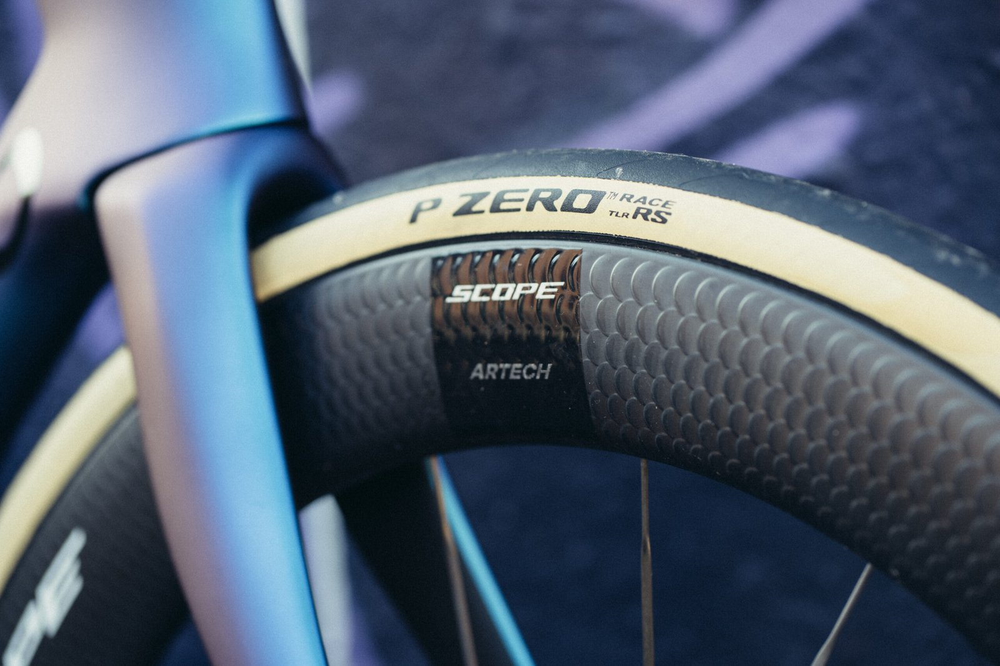

Servis in popravila
Pregled kolesa, nastavitve in menjava obrabljenih delov. Od posameznega popravila do celovitega vzdrževanja.
- Zavore in prestavljanje
- Pogon, veriga in obrabljeni deli
- Pnevmatike in obroči
- Pregled pred sezono ali daljšo potjo
SERVIS IN SESTAVA
Za termin pokličite ali pošljite sporočilo.
Navedite model kolesa in opišite težavo.

PRED OBISKOM
Pokličite, da preverimo prost termin. Če želite najprej pokazati poškodbo ali del, ki ga je treba zamenjati, lahko pošljete fotografijo na Viber.
Pregled kolesa, nastavitve in menjava obrabljenih delov. Od posameznega popravila do celovitega vzdrževanja.
Imate okvir, idejo ali novo kolo za sestavo? Oglasite se, da preverimo dele, možnosti in obseg dela.
Pri menjavi obročev, pogona ali zavor preverimo združljivost delov in se dogovorimo za vgradnjo.
SERVIS
Povejte, kakšno kolo imate in kaj potrebuje. Dogovorimo se za obisk.
Po pregledu določimo obseg dela, okvirno ceno in termin.
Ob prevzemu pojasnimo opravljeno delo in odgovorimo na vprašanja.
POGOSTA VPRAŠANJA
Cena je odvisna od stanja kolesa, potrebnega dela in rezervnih delov. Za oceno nas pokličite; natančen obseg se dogovorimo po pregledu.
Priporočamo, da se pred prihodom dogovorimo. Tako lahko preverimo termin in vam povemo, kdaj pripeljati kolo.
Sporočite znamko in model ter kaj potrebujete. Preverili bomo, ali lahko delo opravimo in katere dele potrebujemo.
Opišite, kdaj in kako se težava pojavi. Fotografija ali kratek video sta lahko v pomoč pri prvem pogovoru.
KONTAKT
Pokličite ali pošljite sporočilo na Viber.